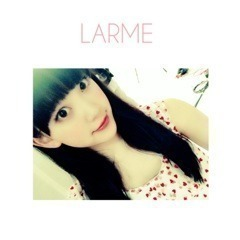

2014/1206Satかぼちゃ依存
こんばんは
堀未央奈です♪♪
今日はみなみとアサイーを
食べに行ってきました！
パンケーキも食べたいねって話してた
0.5秒後にお待たせしました
チョコクリームパンケーキですって
机に運ばれてきて2人で「え？」
ってなって頼んでないです...って
断りました(´･_･`)
2人とも同じ顔してました笑
久しぶりにゆっくり話せて良かった！
今度は温泉旅行行きたいな〜

最近の趣味は、
映画鑑賞と旅です！
映画は全般的によく観ます
最近はほぼ毎日(｀_´)ゞ
洋画邦画スプラッターホラー
恋愛コメディサスペンスＳＦ...
旅は小さい頃から家族の影響で
外国が好きでいつかは外国に
住みたいなと思っています。
その為にお休みがあれば色んな所へ
プチ旅行に行くの！
最近は国内ならジブリ博物館
海外ならスイスに行きたいなぁ♡
あといつか私が家族を温泉旅行に
連れていくのも夢です

部屋着はジェラートピケ♡
今日も新しく買いました！

携帯のフォルダを整理していたら
前LARMEに出た時の
写真が出てきました♫
楽しい撮影だったなぁ〜
最近急に寒くなりましたね>_<
皆さんお身体は大丈夫ですか？
岐阜は雪降っとるんかなぁ？
私は毎日マフラーが手放せません！
ぐるぐる巻きにして顔をうずめると
あったかいし落ち着くから好き♪♪

純奈♡
【今日の加工さん】
毎回画像を可愛く加工して
その写真について色々
話せたらいいなぁと思います。


ミニツリー✡
しかも去年のクリスマスライブで
欲しいって言ってたホワイトツリー
なんです！
お部屋のベッドの隣の棚に
飾りました(^-^)/
皆さんはクリスマスの
飾り付けとかしますか？
お母さんと雑貨屋さんを巡っていて
可愛い赤と白のクリスマスの
刺繍されたランチョンマットを
見つけたのでこれ欲しいって
言ったらご飯食べる時は敷かないよ！
汚れたら嫌でしょ！ってお母さんが
言い出して(´･_･`)笑
ランチョンマットの意味無いやん
って言ったら確かにって言いながら
笑ってました笑

コメント返し
11/29「かるぱっちょっ」
◎No.2 (メロン･ω･パン⊿)さん
次はクリスマスライブ！
14日の夜に行くけん(^-^)/
未央奈とみなみおなのうちわ
持っていく〜。未央奈の
頑張ってる姿ちゃんと
見るねヽ(*＾ω＾*)ﾉ
私事ながら風邪引いた疑惑。。。
未央奈も気をつけてね（ ; ; ）
あ、あと。
未央奈いつもブログ
長くなっちゃった。。。って
言ってるけど、私はブログが
長いほうが好きだよ♡
未央奈のブログ内容が
濃いし好き( ´͈ ᗨ `͈ )◞♡
忙しいなかブログ更新ありがとーね♡
ゆっくり休んでねヽ(*＾ω＾*)ﾉ
おやすみおな(ヽ´ω`)
○嬉しいヽ(*・ω・*)ﾉ
絶対見つける！
よし、ライブ頑張ります♪
メロンパンも身体気をつけて！
こちらこそいつも755やブログに
コメントありがとう(｡･ω･｡)
◎No.9 ナイキ君
この前の握手会はありがとう！
本当に楽しかった＼(^o^)／
久々に未央奈に会えたのも
嬉しかったし、やっぱり
元気になれた！！
未央奈が笑顔で
迎えてくれて良かった〜♪
次はグーチョキパン屋の
ノリに付き合ってよ？笑
握手会だと次行けるのは
1月かな(･_･;
また楽しもう^_−☆
今日も1日おつかれっちヾ(＠⌒ー⌒＠)ノ
○私も楽しかった〜(*^_^*)
1月も待っとるね♪♪
お疲れっち！
◎No.29 貴都さん
お疲れー
いっつも可愛すぎ！
○お疲れ様です♪♪
いやいや...
◎No.290 タカヒーロー
なんか久しぶりだな〜(=ﾟωﾟ)ﾉ
長文&写真たっぷりな
ブログありがとう！
読むの楽しい（≧∇≦）
リュック忘れたの面白い（笑）
でも、俺も学校でリュック背負わずに
帰ろうとしたことある(´･Д･)」
うわぐつを履き替えずにチャリに
乗って帰ろうとしたこともある(´･Д･)」
ここ最近はテレビに乃木坂が
いっぱい出てて嬉しいです！
でも、だんだん年末が
近づいてるんだなーって
気持ちにもなる（笑）
ほんと1年ってあっというまだね！
あっ、ウインクちゃんと見ましたよ！
○こちらこそいつも
読んでくれてありがとう(｡･ω･｡)
忘れちゃいますよね...笑
仲間だ〜みおなかま！
もう年末だもん！早い！
ウインク難しかったです...>_<...
以上

みんな自由。塩アイス
純奈は塩と砂糖を使い分ける小悪魔
日奈子はいじるのが好きなコショウ
私はスルーされても粘るシロップ
（´-`）.｡oO（
NOGIBINGO!3で
乃木の塚歌劇団の男装を
色んなメンバーがしていた時に
みんながちはるさんを見て
かっこいいかっこいいと言っていて
私はその間に、しれ〜っと
ちはるさんに抱きつきにいったら
能條さんに茶々をいれられました！
そんなちはるさんとは朝会ったら
手をあげて、よっ(・ω・)ノ
ってやるの♡笑
あとお弁当いくつ食べたか
報告し合う！

マトリョーシカ風

いつかの私服

昨日の靴はXmas風☆彡
先日StreetJackさんの撮影を
メンバーとしてきました！
その時に本誌を見させていただいて、
私の理想の服装ばかりでした！
リュック、スニーカー、帽子とかを
上手く着こなせる人って男女問わず
素敵だと思います！
乃木坂ファンの皆さんって
お洒落な方が凄く多いなぁって
思っていてその事を編集部の方と
話していました(｡･ω･｡)笑
発売日はまたお知らせします
告知
12/8 NOGIBINGO!3
12/17 乃木のの岐阜放送
12/18POKERFACE発売
(ガールズフォトブック)
12/21 乃木のの山梨放送、
ラジオ福島
12/22 Ray発売
12/26 Mステスーパーライブ
12/29 EYESCREAM発売
POKERFACEやEYESCREAM、
StreetJack、Rayなど
お洒落な洋服雑誌に最近
呼んでいただけて凄く嬉しいです...

12月の握手会でサンタさんと
パジャマを着ようと考え中。
サンタさんは1年に1度きりなので
皆さん来て下さったら嬉しいなぁ...♪

1/7発売の1stアルバム
【透明な色】
私はタイプCのジャケットに
写っています♪♪
今回はみなみ、私、飛鳥さんの
ユニット曲もいただいて
新しく収録されています！
ふわふわした爽やかな曲なので
是非沢山聴いて下さい♫
あ、明日の乃木どこでは
みなみとお出かけしました！
プライベートそのままです〜
皆さん絶対見てください！
ではでは
おやすみなみおな(ヽ´ω`)
2014/12/06 18:06
コメント(697)
未央奈ちゃん！モバメ読んだよ！
私は遠くから応援することしかできないけれど、ずっと応援してるからね！！辛いな〜って思うこととかがあれば溜め込まずにモバメに書いてくれて全然いいからね！むしろその方が頼ってくれてるんだなってなって嬉しいし(﹡ˆ ˆ﹡)無理だけはしないでね！未央奈ちゃんだいすき！！
私は遠くから応援することしかできないけれど、ずっと応援してるからね！！辛いな〜って思うこととかがあれば溜め込まずにモバメに書いてくれて全然いいからね！むしろその方が頼ってくれてるんだなってなって嬉しいし(﹡ˆ ˆ﹡)無理だけはしないでね！未央奈ちゃんだいすき！！
おれも9月に東京に行ったときに
男2人で渋谷ヒカリエのお店でアサイー食べた！
初アサイーは美味しかった！！笑
いつかの私服の写真
こんなシックな感じも似合うね！
あんまり見たことなかったから、びっくり！！
これからも色んな格好を見せてね！！！
モバメの返信！
大丈夫！！
おれはずっと応援する！！！
それが未央奈ちゃんの支えに少しでもなってくれれば
嬉しいです
男2人で渋谷ヒカリエのお店でアサイー食べた！
初アサイーは美味しかった！！笑
いつかの私服の写真
こんなシックな感じも似合うね！
あんまり見たことなかったから、びっくり！！
これからも色んな格好を見せてね！！！
モバメの返信！
大丈夫！！
おれはずっと応援する！！！
それが未央奈ちゃんの支えに少しでもなってくれれば
嬉しいです
堀ちゃんお疲れ様(´ー｀)ノ
モバメ元気無い感じやけど
自分の中に色々溜め込みすぎずに
ちょくちょくぶちまけてな( ゜o゜)
弱虫を強虫にすべくみんな色々考えるけん(*^^*)
モバメ元気無い感じやけど
自分の中に色々溜め込みすぎずに
ちょくちょくぶちまけてな( ゜o゜)
弱虫を強虫にすべくみんな色々考えるけん(*^^*)
乃木どこリアルタイムじゃ見れないけど
録画して後で必ず観るね！
おやすみ☆また今度コメントしますヾ(・∀・*)ノ
録画して後で必ず観るね！
おやすみ☆また今度コメントしますヾ(・∀・*)ノ
初めまして。初コメです。
今年の夏ごろから乃木坂46が好きになりました。最近の755で未央奈ちゃんが岐阜県出身と知りました。同郷ということもあり、未央奈ちゃんがすごく気になります。未央奈ちゃん推しになってもいいですか？
今年の夏ごろから乃木坂46が好きになりました。最近の755で未央奈ちゃんが岐阜県出身と知りました。同郷ということもあり、未央奈ちゃんがすごく気になります。未央奈ちゃん推しになってもいいですか？
こんにちは
あっつんです(*´_●｀)
アサイーのジュース前飲んだけど結構美味しかった〜
映画はなんでもみるよ！
昔から映画好きでめっちゃレンタルしては1日見たりしてたなぁ笑
読書も好き！多分地元の小さい図書館の本ならほぼほぼ読んだ！
あれ…俺すげぇインドア…w( ´∵｀)
マフラー埋まってる未央奈も純奈も可愛さ（＾ν＾）
マフラー可愛いよねやっぱり！
埋もってるとポイント高いかも
雑貨屋さん好き〜
見かけると引き寄せられる不思議
あんまり買い物はしないんだけどね笑
ね、純奈から砂糖なんてもらったことないよ！笑
未央奈から粘られたいなぁ（＾ν＾）
その黒と白の私服好き！
サンタさん俺もみたいなぁ〜
それでは、明日も1日頑張りましょうヾ(＠⌒ー⌒＠)ノ
あっつんです(*´_●｀)
アサイーのジュース前飲んだけど結構美味しかった〜
映画はなんでもみるよ！
昔から映画好きでめっちゃレンタルしては1日見たりしてたなぁ笑
読書も好き！多分地元の小さい図書館の本ならほぼほぼ読んだ！
あれ…俺すげぇインドア…w( ´∵｀)
マフラー埋まってる未央奈も純奈も可愛さ（＾ν＾）
マフラー可愛いよねやっぱり！
埋もってるとポイント高いかも
雑貨屋さん好き〜
見かけると引き寄せられる不思議
あんまり買い物はしないんだけどね笑
ね、純奈から砂糖なんてもらったことないよ！笑
未央奈から粘られたいなぁ（＾ν＾）
その黒と白の私服好き！
サンタさん俺もみたいなぁ〜
それでは、明日も1日頑張りましょうヾ(＠⌒ー⌒＠)ノ
こんにちわ
頑張ってとしか言葉で言えないですが
その数少ないと言う人の一員になれるよう頑張ります
２月以降の握手会等参加して行きます
自分の環境が整うまで少々お待ちください
未央奈ちゃんを支える一員に成れるよう努力中ですので
未央奈ちゃんの笑顔だけで頑張れます
モバメ･755など有りますが年末に向け無理為さらずに元気な 未央奈ちゃんが１番見たいので
クリスマスライブ楽しみにしています
堀未央奈大好きです949382
頑張ってとしか言葉で言えないですが
その数少ないと言う人の一員になれるよう頑張ります
２月以降の握手会等参加して行きます
自分の環境が整うまで少々お待ちください
未央奈ちゃんを支える一員に成れるよう努力中ですので
未央奈ちゃんの笑顔だけで頑張れます
モバメ･755など有りますが年末に向け無理為さらずに元気な 未央奈ちゃんが１番見たいので
クリスマスライブ楽しみにしています
堀未央奈大好きです949382
みおなぁーおはよう(*´∇｀*)ﾉ
かわいぃー大好き
かわいぃー大好き
旅ええなー
一眼レフ片手にクロアチアを巡りたい
一眼レフ片手にクロアチアを巡りたい
パンケーキ、タイミングの良さに驚いちゃいますね。
でも楽しそうで良かった☆
でも楽しそうで良かった☆
こんにちは(^O^)／
今回のブログはいつにも増して写真がいっぱい!(^^)!
いつも堀ちゃんのブログも楽しみにしてます。
みなみちゃんと示し合わせたように連続してアップされてるし。これった単なる偶然(・・?
マトリョーシカ風の写真も可愛かった(*^_^*)
何か赤ずきんちゃんを思い出しちゃった。
確かに海外ならスイスとかいいよねえ。アルプスの山を見てみたい。
あと、フランスのブルターニュ半島辺りに行って大西洋を見てみたいというのがオレの子供の頃からの夢。モンサンミッシェルも見たいしねえ(*^^)v
フランスについては、かなりルパンものに影響されてます。
今夜の乃木どこ？にはみなみちゃんと一緒のところが出るんだよね。楽しみにしてま～す。(^^♪
(^_-)-☆
今回のブログはいつにも増して写真がいっぱい!(^^)!
いつも堀ちゃんのブログも楽しみにしてます。
みなみちゃんと示し合わせたように連続してアップされてるし。これった単なる偶然(・・?
マトリョーシカ風の写真も可愛かった(*^_^*)
何か赤ずきんちゃんを思い出しちゃった。
確かに海外ならスイスとかいいよねえ。アルプスの山を見てみたい。
あと、フランスのブルターニュ半島辺りに行って大西洋を見てみたいというのがオレの子供の頃からの夢。モンサンミッシェルも見たいしねえ(*^^)v
フランスについては、かなりルパンものに影響されてます。
今夜の乃木どこ？にはみなみちゃんと一緒のところが出るんだよね。楽しみにしてま～す。(^^♪
(^_-)-☆
なんかコメント途切れてたみたい笑
続き↓ww
やっと「渇き。」観れた！
いや〜心に何かずっと残るような映画だった。渇きなのに役所さんは汗いっぱいかいてたしwww
12月の握手会でサンタ着るのに行けないっていう現実……
またブログとかモバメで載せてくれたら嬉しいな(=´∀｀)人(´∀｀=)
13日のライブ行けるから見つけて☆〜（ゝ。∂）
精一杯応援しまする！！
この時期体調崩しやすいからしっかり休める時は休んで。
温かい物飲んで！美味しいもの食べて！
いつも元気にいこう^ - ^
じゃあまたね( ´ ▽ ` )ﾉ
今日1日おつかれっち☆
おやすみ(○ﾟεﾟ○)
続き↓ww
やっと「渇き。」観れた！
いや〜心に何かずっと残るような映画だった。渇きなのに役所さんは汗いっぱいかいてたしwww
12月の握手会でサンタ着るのに行けないっていう現実……
またブログとかモバメで載せてくれたら嬉しいな(=´∀｀)人(´∀｀=)
13日のライブ行けるから見つけて☆〜（ゝ。∂）
精一杯応援しまする！！
この時期体調崩しやすいからしっかり休める時は休んで。
温かい物飲んで！美味しいもの食べて！
いつも元気にいこう^ - ^
じゃあまたね( ´ ▽ ` )ﾉ
今日1日おつかれっち☆
おやすみ(○ﾟεﾟ○)
関東では次の握手会が1月の終わりだから寂しいよー(o_o)
でも来週の千秋楽行くからね！
サイリウムめっちゃ振るよ*\(^o^)/*
今日の乃木どこのみなみおな楽しみ(^ ^)
ストリートジャックさんはいつも見てるから乃木坂特集は俺得やねん(･ω･)
堀ちゃんの服装好きだから楽しみ(≧▽≦)
堀ちゃんの服装好きだから楽しみ(≧▽≦)
もうすぐ未央奈に会えると思うと勉強も頑張れるよ！
クリスマスライブはいけないけど、スカパー？で13日はライブ中継されるらしいから、それで見るね！ヽ(´▽｀)/
未央奈最近怖い夢よく見てない？
夢を見るってことは、あんまりぐっすりと寝れてないことらしいから、もっとグッスリと寝れるといいね(´・ω・｀)
あと、自分ごとなんやけど車の免許取れました笑ヽ(；▽；)ノ
これで、名古屋にも行きやすくなった！
年末は、歌番組とかいろいろと忙しくて大変だと思うけど
体に気をつけて無理せずに頑張ってねヽ(*´∀｀)ノ
クリスマスライブはいけないけど、スカパー？で13日はライブ中継されるらしいから、それで見るね！ヽ(´▽｀)/
未央奈最近怖い夢よく見てない？
夢を見るってことは、あんまりぐっすりと寝れてないことらしいから、もっとグッスリと寝れるといいね(´・ω・｀)
あと、自分ごとなんやけど車の免許取れました笑ヽ(；▽；)ノ
これで、名古屋にも行きやすくなった！
年末は、歌番組とかいろいろと忙しくて大変だと思うけど
体に気をつけて無理せずに頑張ってねヽ(*´∀｀)ノ
みおなー
大丈夫？？
モバメ見て即きてみた！
今、仕事の休憩入ったとこ。
抱え込まなくていいよ。
寂しいときはいつでもばっちこい！
モバメでも755でもいいから
何でも話してよ？
芯が強くても、
泣きたいときは泣けばいいし
頼りたいときは頼ればいいよ。
弱音だって吐いてよ。
ツムツムで例えたら
ハート500000個くらい
俺の元気分けるから！
え？！少ない？！
んじゃ、、漬物9000ｔくらい。
そのぐらいあげます、元気。
届けぇえぇえ！！
届いた？またね(ヾ(´・ω・｀)
大切に想ってます。
何をどう頑張るかわからないとき、
そんな時期があってもいいと思う。
長い人生だぜ。
自分信じてさ、
今を楽しんでこ。
大丈夫？？
モバメ見て即きてみた！
今、仕事の休憩入ったとこ。
抱え込まなくていいよ。
寂しいときはいつでもばっちこい！
モバメでも755でもいいから
何でも話してよ？
芯が強くても、
泣きたいときは泣けばいいし
頼りたいときは頼ればいいよ。
弱音だって吐いてよ。
ツムツムで例えたら
ハート500000個くらい
俺の元気分けるから！
え？！少ない？！
んじゃ、、漬物9000ｔくらい。
そのぐらいあげます、元気。
届けぇえぇえ！！
届いた？またね(ヾ(´・ω・｀)
大切に想ってます。
何をどう頑張るかわからないとき、
そんな時期があってもいいと思う。
長い人生だぜ。
自分信じてさ、
今を楽しんでこ。
うぅ〜風邪引いた
今日のモバメ何だか感動的！
未央奈には更に活躍してほしいから、
自分も全力で応援するし、
未央奈みたいに全力で
何事にも取り組まなきゃな！
って改めて思った！！
ありがと(*^^*)
ライブリハがんばってね☆
所用で見に行けないけど応援してるよ！！
未央奈には更に活躍してほしいから、
自分も全力で応援するし、
未央奈みたいに全力で
何事にも取り組まなきゃな！
って改めて思った！！
ありがと(*^^*)
ライブリハがんばってね☆
所用で見に行けないけど応援してるよ！！
堀くん、こんにちは。
モバメ読みました。
ブログでは書かないような事をモバメでは送ってくれてるので
逆にとても心配しちゃいます
まだ18の女の子ですもんね
心配、不安、自信のなさとか
考えちゃうよね
数少ない(って堀くんが思い込んでる)ファンの一人としてはどうしたらその不安を取り除いてあげられるんだろ？
逆に堀くんから頑張ってる姿や明るさ、楽しさをたくさん貰ってるのに…。
今週末の有明で声の限り堀くんの名前を叫ぶよ
月末の名古屋へ元気な姿を見に行きます
ワシは決して数少ないとは思ってないけどね(^_^)ゞ
モバメ読みました。
ブログでは書かないような事をモバメでは送ってくれてるので
逆にとても心配しちゃいます
まだ18の女の子ですもんね
心配、不安、自信のなさとか
考えちゃうよね
数少ない(って堀くんが思い込んでる)ファンの一人としてはどうしたらその不安を取り除いてあげられるんだろ？
逆に堀くんから頑張ってる姿や明るさ、楽しさをたくさん貰ってるのに…。
今週末の有明で声の限り堀くんの名前を叫ぶよ
月末の名古屋へ元気な姿を見に行きます
ワシは決して数少ないとは思ってないけどね(^_^)ゞ
こんにちは！
コメント遅くなっちゃった(´･_･`)
最近忙しくて…ごめんなさい！
みなみとアサイー食べに行ったんだ！
最初何のことだか分からなかったよ笑笑
いいなー。旅行行きたいな♪
未央奈の地元岐阜県に観光で行きたいです！
一緒に行こー♪
スプラッター映画の他に恋愛コメディもハマってるんやね(*^^*)
俺は最近映画見てないなぁ。。。
意外かもしれないけどカーアクション映画とか好きだよ！なかなか珍しいジャンルだよね>* ))))><
モノトーンで固めたコーデって大人っぽく上品に見えるよね♪
足元も黒くて白いファーが付いてるからおしゃれ☆
未央奈ファッションレベル高すぎるよ(o^^o)
俺は最近テーラードジャケットにハマってる♪
でもそれだけだとやっぱり寒いからインナーに差し色でパーカーも着てるよ*\(^o^)/*
めっちゃ暖かい。。
ミニクリスマスツリー可愛い！
小学生の頃までは大きいクリスマスツリー飾ってたけど最近飾らなくなっちゃった。。。
なんか寂しいねT_T
今度小さいのでもいいから探してみるね！
ちはる確かにカッコ良すぎる！
顏立ちも綺麗だしめっちゃ合ってたなーo(^▽^)o
モバメ見たけど1人で抱え込んじゃダメだよ。。
未央奈推しは熱い人が多い。
そういう人こそ自分になかった考え方とか生き方を知ってると思うし良い刺激を受けると思う。
たまには頼ってね。
いつでも相談に乗るしずっと未央奈の味方だから
コメント遅くなっちゃった(´･_･`)
最近忙しくて…ごめんなさい！
みなみとアサイー食べに行ったんだ！
最初何のことだか分からなかったよ笑笑
いいなー。旅行行きたいな♪
未央奈の地元岐阜県に観光で行きたいです！
一緒に行こー♪
スプラッター映画の他に恋愛コメディもハマってるんやね(*^^*)
俺は最近映画見てないなぁ。。。
意外かもしれないけどカーアクション映画とか好きだよ！なかなか珍しいジャンルだよね>* ))))><
モノトーンで固めたコーデって大人っぽく上品に見えるよね♪
足元も黒くて白いファーが付いてるからおしゃれ☆
未央奈ファッションレベル高すぎるよ(o^^o)
俺は最近テーラードジャケットにハマってる♪
でもそれだけだとやっぱり寒いからインナーに差し色でパーカーも着てるよ*\(^o^)/*
めっちゃ暖かい。。
ミニクリスマスツリー可愛い！
小学生の頃までは大きいクリスマスツリー飾ってたけど最近飾らなくなっちゃった。。。
なんか寂しいねT_T
今度小さいのでもいいから探してみるね！
ちはる確かにカッコ良すぎる！
顏立ちも綺麗だしめっちゃ合ってたなーo(^▽^)o
モバメ見たけど1人で抱え込んじゃダメだよ。。
未央奈推しは熱い人が多い。
そういう人こそ自分になかった考え方とか生き方を知ってると思うし良い刺激を受けると思う。
たまには頼ってね。
いつでも相談に乗るしずっと未央奈の味方だから
未央奈〜お疲れ様〜
12月の握手会って名古屋のことなんだよね？
京都が12/28にあるんだけどそこでは着てくれないん？
みなみおなファンの人用のサイリウムの色は何色がいいの？
４本持ち(オレンジ白、水色オレンジ）かな？
12月の握手会って名古屋のことなんだよね？
京都が12/28にあるんだけどそこでは着てくれないん？
みなみおなファンの人用のサイリウムの色は何色がいいの？
４本持ち(オレンジ白、水色オレンジ）かな？
みおなの笑顔も好きだけど希に見せる大人な表情も好き!
ギャップってやつか？(笑)
乃木どこめっちゃ楽しみ
朝にコメントしたけど♡つけ忘れてた(^^;
モバメ読んだよー。書いてた通り芯が強そうだから結構何でも大丈夫そうって思ってたけど、凹む時もあるよね。しんどい時は溜めずに吐き出してね！ファンの人はたくさんコメントくれるだろうし、自分もその一部としてほんの少しでも堀ちゃんに元気になってもらえたらすごく嬉しいです、堀ちゃんからは元気たくさんもらってるので！いつもありがとう(^-^)
話変わるけど、back numberさんの曲は聴いたりする？「ささえる人の歌」っていう曲があるんだけど、元気が出るオススメの曲です！自分も去年、就職で田舎から上京してきて、落ち込んだりした時はこの歌を聴いてました。今は色々忙しくて時間とれないと思うけど、よかったら聴いてみてね。
モバメ読んだよー。書いてた通り芯が強そうだから結構何でも大丈夫そうって思ってたけど、凹む時もあるよね。しんどい時は溜めずに吐き出してね！ファンの人はたくさんコメントくれるだろうし、自分もその一部としてほんの少しでも堀ちゃんに元気になってもらえたらすごく嬉しいです、堀ちゃんからは元気たくさんもらってるので！いつもありがとう(^-^)
話変わるけど、back numberさんの曲は聴いたりする？「ささえる人の歌」っていう曲があるんだけど、元気が出るオススメの曲です！自分も去年、就職で田舎から上京してきて、落ち込んだりした時はこの歌を聴いてました。今は色々忙しくて時間とれないと思うけど、よかったら聴いてみてね。
昨日のスポ－ツ新聞で1stのジャケット写真を見ました
文中で朝5時撮影と書いてあり
朝からご苦労様ですと頭が下がる思いです
有明のコンサ－ト観に行けませんが頑張って下さい
文中で朝5時撮影と書いてあり
朝からご苦労様ですと頭が下がる思いです
有明のコンサ－ト観に行けませんが頑張って下さい
コメント2回目
オススメの海外は
カナダのバンクーバー☆
高校の修学旅行で行ったんやけど
良かったよ！
カナダは主食パンやしね(*´∀`)ノ
未央奈にはちょうど良いかも(*￣▽￣*)
オススメの海外は
カナダのバンクーバー☆
高校の修学旅行で行ったんやけど
良かったよ！
カナダは主食パンやしね(*´∀`)ノ
未央奈にはちょうど良いかも(*￣▽￣*)
そういえば1月に握手会行く予定って前のコメントに書いたけど
2月になりそう(><)
ごめん！
でも2月はアルバムの握手会にも行く予定だから
2日連続や！！！＼(^0^)／
初握手～
あとアルバムType-Cのジャケット
塩アイス並んでるね！！！
今気づいた！！！
2月になりそう(><)
ごめん！
でも2月はアルバムの握手会にも行く予定だから
2日連続や！！！＼(^0^)／
初握手～
あとアルバムType-Cのジャケット
塩アイス並んでるね！！！
今気づいた！！！
堀ちゃんお仕事お疲れ様！！
来週ライブ楽しみにしてるよ♪
寒いから風邪気をつけて☆
来週ライブ楽しみにしてるよ♪
寒いから風邪気をつけて☆
みおなー！
始めてコメントします！
今までも読んでたけど、どーせ読まれないと思ってた(。>д<)
でもみおなは読んでくれそうやからコメントするね笑
岐阜は昨日雪積もったよー
握手会はいつも名古屋だけ行ってるから、名古屋でサンタ着てくれたら嬉しいな！
まあ、みおなに会えるだけでも嬉しいんだけどね笑
クリスマスライブも握手会もみおなのユニットがあるアルバムも楽しみがたくさんやー！
たしゅー
始めてコメントします！
今までも読んでたけど、どーせ読まれないと思ってた(。>д<)
でもみおなは読んでくれそうやからコメントするね笑
岐阜は昨日雪積もったよー
握手会はいつも名古屋だけ行ってるから、名古屋でサンタ着てくれたら嬉しいな！
まあ、みおなに会えるだけでも嬉しいんだけどね笑
クリスマスライブも握手会もみおなのユニットがあるアルバムも楽しみがたくさんやー！
たしゅー
ホワイトツリーかわいい！
僕はさっぱりしているお酢です。
１月の握手会楽しみ！
僕はさっぱりしているお酢です。
１月の握手会楽しみ！
コメントするって言っておいて、すごく遅れてしまって、(m´･ω･`m)ごめんなさい。
みおな、怒らないで（汗）
みなみと仲良いね！こっちも笑顔になれるコンビ！
アサイーはどこのお店で食べたのかな？
スプラッター映画だけしか見ないのかと思ってた！
そりゃあ女の子だから恋愛系とか見るよねw
みおなと映画デートしてみたいです♡
乃木坂合格してなかったら、海外の高校行ってたんだもんね...
そう考えると、みおなが乃木坂に合格してくれて本当に良かったな✨✨
みおなと出会えたことが何より幸せだ。
是非
みおな、怒らないで（汗）
みなみと仲良いね！こっちも笑顔になれるコンビ！
アサイーはどこのお店で食べたのかな？
スプラッター映画だけしか見ないのかと思ってた！
そりゃあ女の子だから恋愛系とか見るよねw
みおなと映画デートしてみたいです♡
乃木坂合格してなかったら、海外の高校行ってたんだもんね...
そう考えると、みおなが乃木坂に合格してくれて本当に良かったな✨✨
みおなと出会えたことが何より幸せだ。
是非
堀ちゃんの…、乃木坂の……、楽しい毎日、ありがとう！！！！！
乃木どこ、見るぜ♪
乃木どこ、見るぜ♪
僕もラーメン屋でめっちゃ早くらーめんきたと思ったら別の人のらーめんだったてことがつい最近ありましたよー(⌒▽⌒)
堀未央奈ちゃんへ
モバメありがとう。
どう頑張ったらいいのか時によって迷うこともあると思う。
未央奈！
自分自身で決して解決なんかするなよ！
応援している皆さんやメンバー、スタッフさんに相談するのも大切。
Kackey
モバメありがとう。
どう頑張ったらいいのか時によって迷うこともあると思う。
未央奈！
自分自身で決して解決なんかするなよ！
応援している皆さんやメンバー、スタッフさんに相談するのも大切。
Kackey
乃木どこ見るよ！
録画もしてるよ！
録画もしてるよ！
お疲れ様！
今回の乃木どこ楽しみにしてます♪
いつも楽しみにしてますけどね（笑）
今回の乃木どこ楽しみにしてます♪
いつも楽しみにしてますけどね（笑）
お疲れ様です!!
アサイーはあまり食べたことないでが、確かに美味しいですね(^-^)
みなみとの温泉も近々行けるといいですね
是非二人で下呂温泉へ行ってください
乃木どこ楽しみにしてますヽ(・∀・)ノ
アサイーはあまり食べたことないでが、確かに美味しいですね(^-^)
みなみとの温泉も近々行けるといいですね
是非二人で下呂温泉へ行ってください
乃木どこ楽しみにしてますヽ(・∀・)ノ
みおなちゃん、こんばんは。
乃木坂４６、ファーストアルバム「透明な色」絶対買うね。僕は発売日の来年１月７日がめっちゃ楽しみです。
２枚目の写メのみおなちゃん、めっちゃかわいいです。
今日の乃木どこ、絶対見るね。僕は見るのがめっちゃ楽しみです。
みおなちゃん、体調に気をつけて仕事頑張ってね。
またコメントするね。
乃木坂４６、ファーストアルバム「透明な色」絶対買うね。僕は発売日の来年１月７日がめっちゃ楽しみです。
２枚目の写メのみおなちゃん、めっちゃかわいいです。
今日の乃木どこ、絶対見るね。僕は見るのがめっちゃ楽しみです。
みおなちゃん、体調に気をつけて仕事頑張ってね。
またコメントするね。
みおな～
乃木のの岐阜放送~ よかった！！岐阜初放送？
Xmas live がんばりまーす 体調気づけてください
ユニット曲も、全曲も、沢山聴いて
今夜乃木どこ見て
おはよーキングダムみおな(*^^*)
なぞの落書き早く聞きたい！
たのしみおな(*^^*)
もうすぐクリスマスライブだ～(^з^)-☆
みおなうちわ持って3公演行くよ。
秋田のぞぉさん☆
なぞの落書き早く聞きたい！
たのしみおな(*^^*)
もうすぐクリスマスライブだ～(^з^)-☆
みおなうちわ持って3公演行くよ。
秋田のぞぉさん☆
みおなちゃん、こんばんはー(^o^)
俺も映画好きだよ♪
今年見たのだと、『スティング』とか『レオン』とかが面白かった！
ホラー映画はあんまり見たことないんだけど、みおなのオススメ何かある？
いつか、みおなが主演の映画を見たいな～(^^)
映画に出れるなら、どんな映画に出演したい？
今日の「乃木どこ」録画予約してるよ！
みおなが見れるのが楽しみ(≧∇≦)
俺も映画好きだよ♪
今年見たのだと、『スティング』とか『レオン』とかが面白かった！
ホラー映画はあんまり見たことないんだけど、みおなのオススメ何かある？
いつか、みおなが主演の映画を見たいな～(^^)
映画に出れるなら、どんな映画に出演したい？
今日の「乃木どこ」録画予約してるよ！
みおなが見れるのが楽しみ(≧∇≦)
いやぁ(*^_^*)写真全部かわいいな
部屋着のやつ最高だわ＼(^o^)／
いま、北海道にいるけど、
今夜の満月が綺麗だねー
部屋着のやつ最高だわ＼(^o^)／
いま、北海道にいるけど、
今夜の満月が綺麗だねー
みおなー♡
今日乃木どこだね！
みなみおな楽しみにしてるよ(^^)♪
応援してるから♡
頑張ってね！
今日乃木どこだね！
みなみおな楽しみにしてるよ(^^)♪
応援してるから♡
頑張ってね！
みなみおな可愛すぎる(*´ω｀*)
みおちゃんの可愛さにいつも癒されてます☆
みおちゃんの可愛さにいつも癒されてます☆
もちろん乃木どこ見るよ!(*´∀｀)
これだけ言うってことはそれだけ見て欲しいってことなんだね( ☆∀☆)
そーいえば去年の京都でカモノハシのマフラー人形？みたいなやつあげたの思い出したwじわるw
さすがにもう亡くしたか捨てたかな(´◑д◐｀)
みおなあいかわらず可愛いし元気そうでいいね〜
さすがにもう亡くしたか捨てたかな(´◑д◐｀)
みおなあいかわらず可愛いし元気そうでいいね〜
こんばんは～( *・ω・)ノ
ちょうど、、みんな、、進路を、選らばなくては、いけない時だから、、不安になるよね。。(^ω^)
～ひとり、一人が、背負う～問いの、行方は～
～それぞれの、明日へ～
もし、、みんなに、、重なる願いが、あるなら、、
形にしなくては、、ならない、、(^ω^)過ぎていく、時の中で、、
、、ってことですね。(^ω^)
、、応援しているね～(^ω^)
じゃあ、、おやすみなさい～(´・ω・`)/~~
、、まだ、、早いか。。(^ω^)(笑)
ちょうど、、みんな、、進路を、選らばなくては、いけない時だから、、不安になるよね。。(^ω^)
～ひとり、一人が、背負う～問いの、行方は～
～それぞれの、明日へ～
もし、、みんなに、、重なる願いが、あるなら、、
形にしなくては、、ならない、、(^ω^)過ぎていく、時の中で、、
、、ってことですね。(^ω^)
、、応援しているね～(^ω^)
じゃあ、、おやすみなさい～(´・ω・`)/~~
、、まだ、、早いか。。(^ω^)(笑)
未央奈が抱えてる不安なこととか
少しでも聞いてあげたい(ノ_・,)
握手行くから。。待ってて！
少しでも聞いてあげたい(ノ_・,)
握手行くから。。待ってて！
みおなちゃんこんばんは！＼(^_^)／かなりありがとうございます 今日は頑張ります!!


聞いてー！
クリスマスライブ
チケット取れたのー！
サイド席だけどね(^^;
でもすごくうれしい♪♪
初めての乃木坂のライブ
楽しみにしてるね☆
みおなちゃん見つけるぞー＼(^o^)／
あとね、
日経エンタメ読んだよ◎
2期生について、趣味について、
覚悟について…
色々なことが書いてあって
改めてみおなちゃんが知れて
改めて応援したいって思いました！
最近みおなちゃん、
嫌な夢を見ちゃってることが
多い気がしてて
仕事への不安や迷いがあるのかな
って思ったりもしたけど
755で言ってた
遊ぶ予定が仕事で行けなくなって
周りから責められて…っていう夢で
夢の中でも
それでも仕事に行こうとしてた
みおなちゃんは立派だなって
思ったよ。
うまくいかなくてもいい。
自信がなくてもいい。
みおなちゃんのアイドルへの想いは
本物だから(^-^)
今やれることを
やれるだけ頑張ってみて！
ファンはいつでも応援してます(^^)v